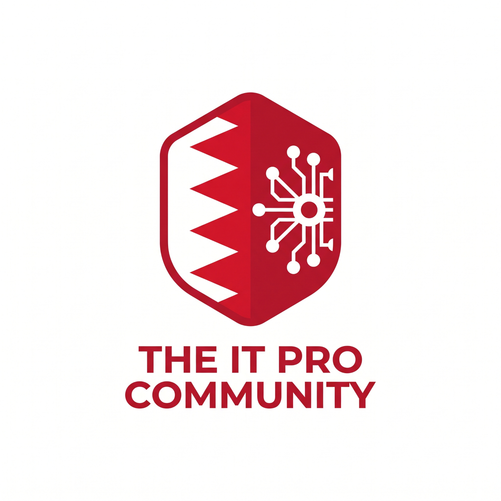

Computer Scientists
Focused on algorithmic efficiency and clean, maintainable codebases.

The IT Pro Community is a premier virtual network in Bahrain dedicated to advancing the craftsmanship of AI-assisted software engineering, empowering technology professionals to build resilient, high-efficiency systems and evolve in the era of Large Language Models.
The IT Pro Community is a virtual initiative in the Kingdom of Bahrain designed to help technology professionals survive and evolve in the era of Large Language Models (LLMs). Bringing together computer scientists, software engineers, data engineers, solution architects, system administrators, cybersecurity specialists, and graphical user interface designers, the community champions the craftsmanship of AI-assisted software engineering over superficial hyping and misleading advertisements, welcoming both seasoned practitioners and dedicated learners who want to master disciplined engineering from experts. The initiative also hosts a hackerspace for its dedicated Linux User Group (LUG) to promote free culture and open collaboration. While actively supporting Bahrainization and the advancement of national talent within the local IT sector, the community remains inclusive and open to expatriate professionals of all nationalities. Operating primarily through focused WhatsApp groups with plans for future in-person gatherings.
We stand firmly for engineering discipline, algorithmic competence, and verifiable system design in an age flooded with unverified generative code.
True craftsmanship requires deep collaboration across every layer of the stack.
Focused on algorithmic efficiency and clean, maintainable codebases.
Building robust, scalable pipelines and architectures for data processing.
Ensuring scalable infrastructure, uptime, and operational resilience.
Safeguarding systems against emerging, AI-era vulnerabilities.
Crafting intuitive, human-centric interfaces with real-world usability.
Alongside its focus on AI-assisted engineering, the community hosts a hackerspace for its Linux User Group (LUG). Built on the principles of free culture and open collaboration, this group provides a collaborative space for open-source enthusiasts, systems engineers, and developers to share knowledge, advocate for software freedom, and explore the open technologies that power modern computing infrastructure.
At its core, The IT Pro Community is deeply committed to supporting Bahrainization within the local information technology sector. By fostering high-level mentorship, peer code reviews, and architectural discussions, we aim to cultivate world-class Bahraini technical leadership capable of driving the Kingdom's digital economy forward. At the same time, we recognize that great engineering thrives on diverse perspectives; our doors are wide open to expatriate IT professionals of all nationalities who contribute to Bahrain's vibrant technology ecosystem.
Bridging continuous online architectural discourse with meaningful offline events.
Curated WhatsApp groups where members dissect real-world challenges and share battle-tested insights.
Upcoming face-to-face technical gatherings, meetups, and workshops across the Kingdom of Bahrain.
Founded by a collective of Bahraini professional developers.
Technology leader and entrepreneur in the GCC region, driving advanced computing and AI initiatives.
Solution architect dedicated to mission-critical system design. A lifelong GNU/Linux user and advocate.
Whether you are an experienced software architect or an earnest learner who wants to build production-grade systems, we welcome you to join our community.